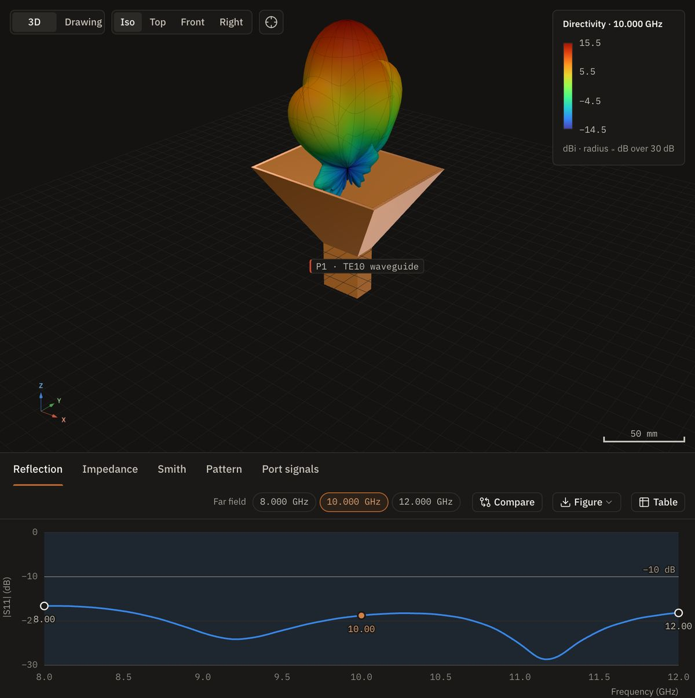
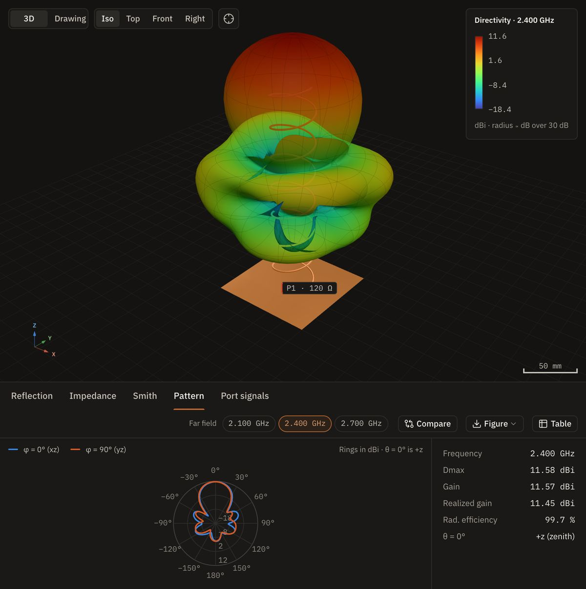
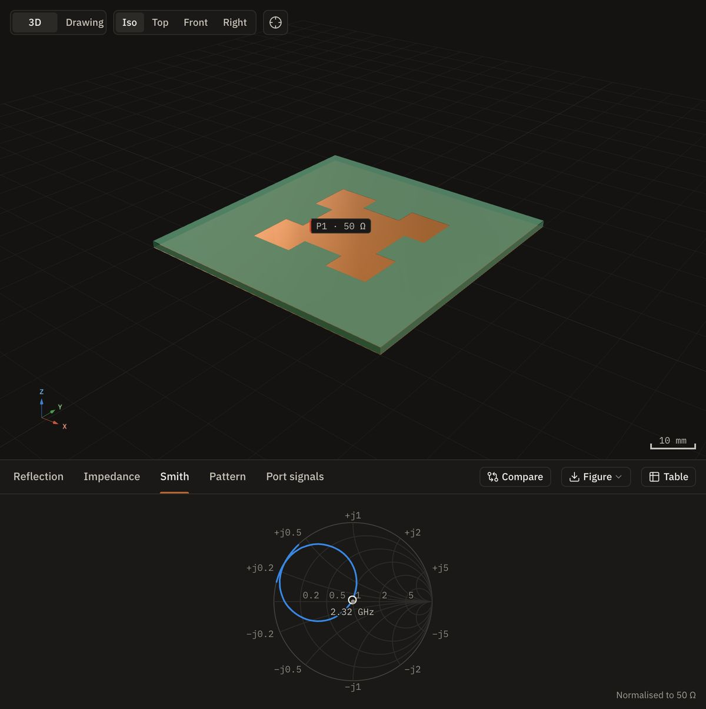
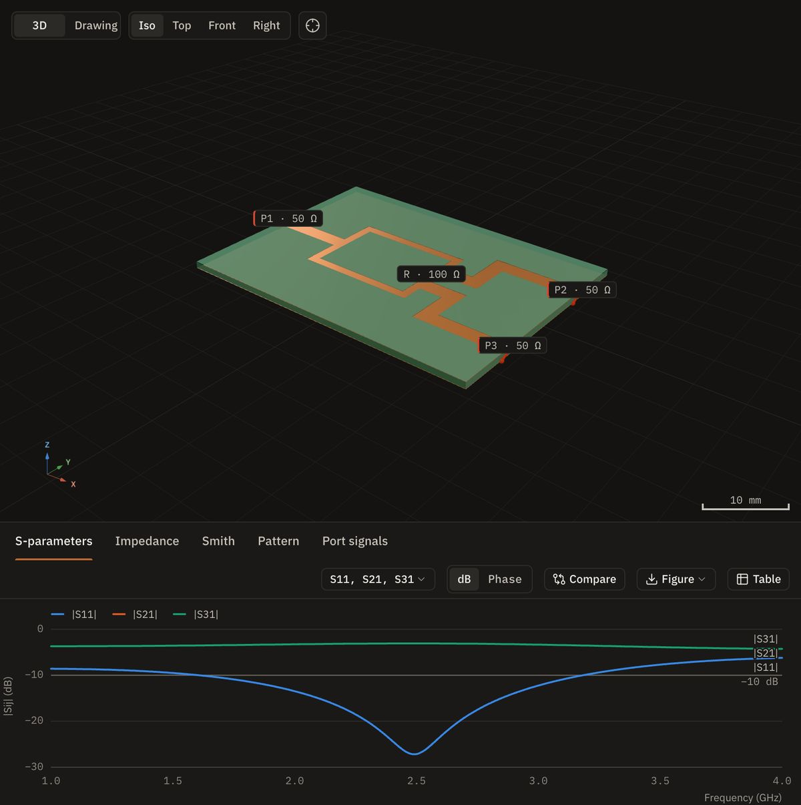
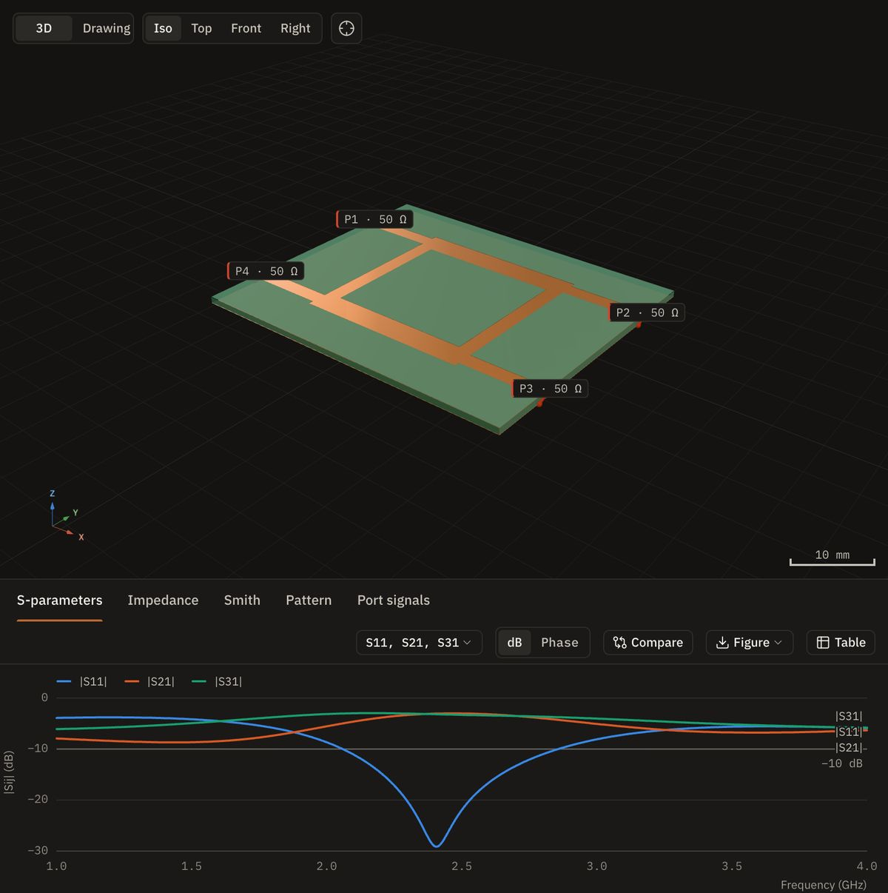
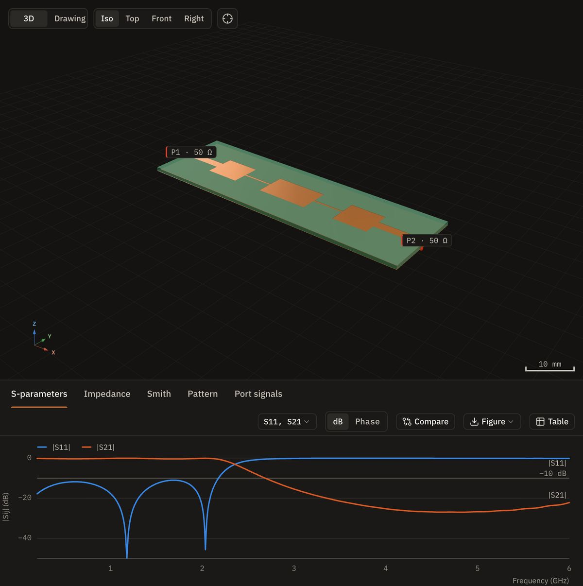
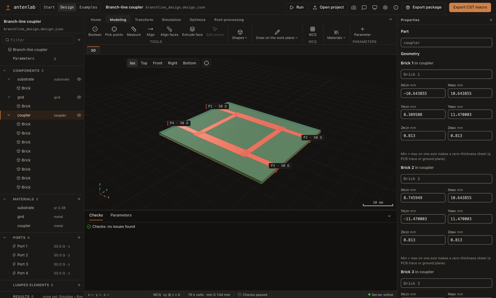
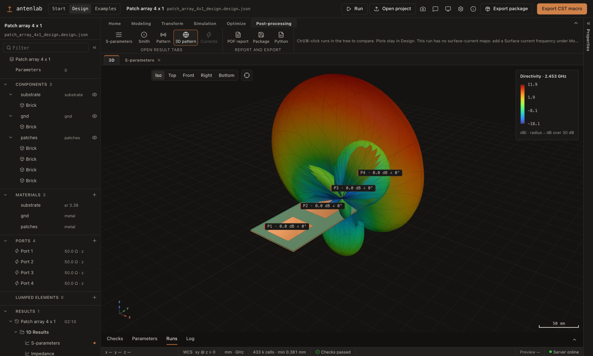
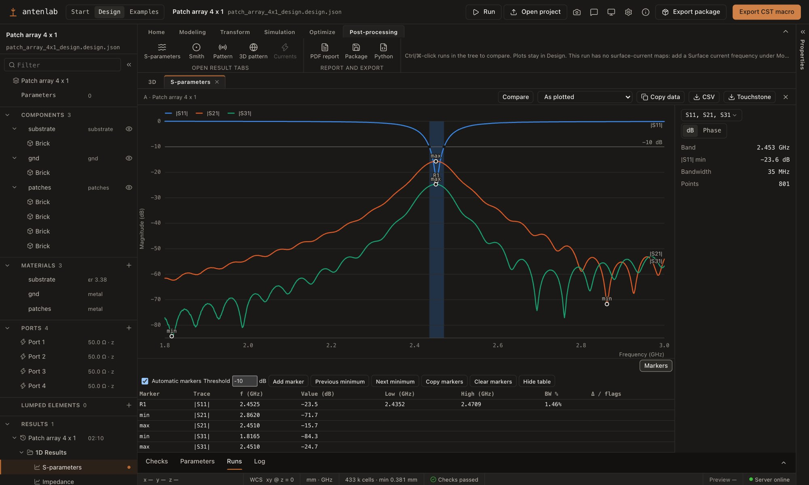

Antenna simulation workbench · openEMS FDTD
Design antennas. See the fields.
Draw an antenna, a microstrip circuit or an array in a ribbon-based 3D designer, or import a CST-compatible VBA macro. Fairbeam meshes it, runs the open-source openEMS solver on the CPU or the GPU, and shows the results next to the model: S-parameters with markers, radiation patterns, surface currents, sweeps, an optimizer, and exports for Touchstone, CST-compatible VBA macros and PCB fabrication.
Free desktop app for macOS (Apple silicon) and Windows. The browser demo is read-only and opens 14 example projects that were simulated beforehand.
How it works
From a model to fields, in one patch antenna
Model it
Draw it in the designer, where every length is an expression over named parameters, or import a CST-compatible VBA macro. The same model can also be one Python file with a
build()that places metal, dielectrics and ports.def build(p): sim = Simulation(1e9, 3e9) sim.metal("patch").AddBox(...) sim.dielectric("substrate", 3.38).AddBox(...) sim.lumped_port(1, 50, ...) return simExact geometry
The viewer rebuilds every primitive exactly: a 32 × 40 mm patch on 1.524 mm of εr 3.38, the ground plane and a 50 Ω probe feed.
Meshed for FDTD
Fine cells at the patch edges and in the substrate, coarse ones in the air: 69 × 69 × 58 mesh lines, 263 k cells.
Excited, the currents flow
A Gaussian pulse at the feed rings the patch. This is the surface current openEMS recorded at resonance: strongest in the middle of the patch and falling to zero at the two radiating edges, as the TM010 mode predicts.
It radiates
Near-to-far-field transform: 6.79 dBi broadside at 2.453 GHz, 96.5 % radiation efficiency. Radius and color both show directivity.
Checked, then exported
|S11| dips to −34.5 dB at 2.453 GHz, within 0.1 % of the converged mesh. Then everything goes out: a CST-compatible VBA macro, Touchstone, drawings, a report, Gerber files.
Arrays
Four patches, one beam you can steer
One patch becomes four
The same patch four times, half a wavelength apart (61.2 mm) on one 66 × 243.6 mm board, each with its own 50 Ω port. Fed in phase they reach 11.9 dBi broadside, about 5 dB above the single patch.
Steered by phase alone
A phase that falls by k·d·sin θ0 from port to port turns the beam. openEMS ran once per port with the other three terminated in 50 Ω (four runs, 18 s on the GPU engine), so every angle here is the weighted sum of four embedded element patterns: coupling included, and each port's active reflection moves with the beam.
Your turn
Steer it. The app does the same for any amplitudes and phases, and exports the steered pattern.
Examples
Horns, helices, fractals and circuits
Pyramidal horn, WR-90
An optimum-gain horn fed by a TE10 waveguide port, with PML boundaries: 15.5 dBi at 10 GHz and |S11| below −16 dB from 8 to 12 GHz.
Axial-mode helix
A Kraus helix, seven turns at 13° pitch over a square ground plane: right-hand circular, 11.6 dBi at 2.4 GHz, an axial ratio of 0.9 dB on boresight and the cross-polarized LHCP 26 dB lower.
Minkowski fractal patch
The fractal edge lengthens the current path: 30 × 30 mm of copper resonates at 2.324 GHz, below the 32 × 40 mm plain patch at 2.453 GHz on the same substrate, at the price of bandwidth (0.8 %).
Wilkinson divider
Three ports and one lumped 100 Ω resistor: an equal split with S21 = S31 = −3.09 dB. One openEMS run per driven port gives the full S-matrix.
Branch-line coupler
A 90° hybrid: −3.21 and −2.99 dB to the two outputs at 2.40 GHz, 90.0° apart, with the reciprocity and passivity of the four-port matrix checked.
Stepped-impedance low-pass
Alternating wide and narrow line sections: the −3 dB point lands at 2.356 GHz, 5.2 % below the ideal line cascade, because the steps themselves add capacitance.






The designer
Model, simulate and read the results in one window
A ribbon on one row
Home, Modeling, Transform, Simulation, Optimize and Post-processing on one row. Draw bricks in 3D, extrude a picked face, combine shapes with booleans, and move, rotate, mirror or scale them in one Transform dialog (Ctrl+T).
Tree and properties
Components, materials, ports, lumped elements, mesh and results in a navigation tree with drag and drop. The panels collapse, Undo, Redo and a modeling history keep track of the edits, and a Python panel sits alongside.
Runs under the design
Every run is listed under Results with its S-parameters, far fields and surface currents. Picking one shows it in the 3D view: here the 4 × 1 array's pattern over its geometry.
Markers on every plot
Resonances and their bandwidth are marked, with a hover read-out, a two-marker bandwidth, your own markers and a table you can copy. Runs are compared by the parameters that differ.
One click out
Copy data or CSV in dB, phase, Re/Im or magnitude/phase, and Touchstone files. The ribbon adds a PDF report, an export package and the Python model, the header a CST-compatible VBA macro.



Real outputs
The files, as they come out


Features
What Fairbeam does
-
Ribbon-based designer
A one-row ribbon, a collapsible navigation tree, properties and dock, and a Python side panel. Bricks, cylinders, spheres, cones, tori, wires, polygons and extrusions; draw bricks in 3D, extrude a picked face, booleans, one Transform dialog, shortcuts, Undo, Redo and Save As.
-
Import a VBA macro
Reads a CST-compatible VBA macro or history list: parameters, materials, shapes, booleans, transforms, ports, resistors, monitors, the band, the boundaries and manual mesh lines. An import report lists every command that was skipped or changed, with its line.
-
Parameters and checks
Every length and frequency is an expression over named parameters. Checks run as you edit and explain what they found; a design without an excited port, or one that cannot converge, is refused before any solver time is spent.
-
Start templates and examples
Start from a half-wave dipole, a quarter-wave monopole, an open-ended waveguide, a printed sleeve dipole or a two-port microstrip line, or pick an example from a searchable list, which now includes a 2-element collinear and a 5-element Yagi for 867 MHz.
-
Import PCB artwork
Home › Import PCB turns DXF, Gerber and Excellon files into a design;
fairbeam import-pcbdoes the same from the command line. -
Automatic meshing
Auto mode picks the mesh settings for each design, and every field can be overridden. Thin PCB copper is meshed as sheets, converted examples keep their own mesh lines, and the mesher lands within 0.1 % of converged hand meshes.
-
Mesh convergence
Simulation › Mesh convergence… runs the design at finer automatic meshes until the resonance, |S11| and Dmax stop changing, and reports the density that converged. From the command line:
fairbeam converge. -
Run quality and one-click fixes
A run that did not converge, or whose numbers look suspicious, is flagged in the tree and on its results. Common design checks offer a fix in one click. Waveguide-port power is calibrated, so the pyramidal horn's efficiency reads about 99 %.
-
Parameter sweeps
Sequences, each over up to six parameters as ranges or value lists, checked before anything runs. The runs are queued, and every run of the sweep can be compared in one plot.
-
Goal-driven optimizer
Goals such as f0, |S11| at a frequency, bandwidth, Dmax or |Sij| limits, over as many parameters as you vary. Secant, Nelder–Mead, Bayesian, CMA-ES, particle swarm, genetic and trust-region searches, with live progress; the best result is kept to open, apply or save.
-
Multi-port S-parameters
One openEMS run per driven port gives the full S-matrix of filters, dividers, couplers and arrays, with reciprocity and passivity checks, a picker for any Sij, a Smith chart per port and Touchstone
.sNpexport. -
Results with markers
Result tabs: S-parameters, impedance, VSWR, Smith chart, efficiency and patterns, with markers for resonances and bandwidth, hover read-outs and your own markers. Runs are compared by the parameters that differ; Copy data and CSV in dB, phase, Re/Im or magnitude/phase.
-
Result summaries and comparison
Headline numbers for each run in the tree and the Runs table, and Tables › Summary. A comparison table lists the parameters that differ between runs; copy it or save it as CSV.
-
2D and 3D field maps
The Field map tab shows E and H planes as heat maps with a read-out and the model's outline. Phase and Animate play a time-harmonic animation of the field, in 2D and in the 3D view.
-
Far field, currents, beams
3D patterns and polar cuts in directivity, gain, realized gain or RHCP/LHCP, with a card for Dmax, gains, radiation, mismatch and total efficiency and the main lobe. Optionally, the radiation and total efficiency over the whole band, computed after the run (about 0.3 s for 21 frequencies on the patch; the solver time does not change). Animated surface currents, and array beams steered after the run.
-
GPU engines
Optional GPU builds of openEMS: Metal on Apple silicon and CUDA on NVIDIA cards under Windows. The patch antenna takes 1.6 s instead of 10.6 s on an M5 Pro, and 2.6 s instead of 53 s on a Ryzen 9 with an RTX 3060. When a GPU build is installed it is the default, and the CPU engine stays available.
-
VBA macro, drawings, fabrication
A CST-compatible VBA macro rebuilds the model in the target program, and Touchstone or CSV files can be compared against the run. Dimensioned drawings, publication figures, a PDF report, and Gerber, drill and DXF files (preview).
-
Desktop app
For macOS and Windows, in English or Turkish (General settings › Language, native menus included, with a Decimal separator setting), with Save As, and a question before closing unsaved work. First start installs Python and openEMS for your user account; projects live in Documents/Fairbeam, and updates are offered in the app.
Results
Measured, with the source of every number

Validation
| Check | Fairbeam | Reference |
|---|---|---|
| Dipole Dmax | 2.13–2.15 dBi | 2.11 dBi (theory) |
| Patch resonance | 2.455 GHz | 2.513 GHz (TL model), −2.3 % |
Dipole: three lengths, 50 to 66 mm, end criterion −60 dB. Patch: converged mesh, against a transmission-line model. Details and commands in the validation notes of the repository.
Solver time in seconds
| Model | Cells | Apple M5 Pro | Ryzen 9 7900X | |||
|---|---|---|---|---|---|---|
| CPU | GPU | 4 threads | 24 threads | CUDA | ||
| Patch antenna, −60 dB | 0.26 M | 10.6 | 1.6 | 52.9 | 49.9 | 2.6 |
| 4 × 1 patch array (4 runs) | 0.45 M | – | 14.2 | 874 | 686 | 25.1 |
| Sierpinski monopole | 2.0 M | 12.0 | 2.7 | 61.1 | 65.7 | 3.4 |
The same models give the same results on both platforms. Runs that stop at the same timestep agree within 0.1 dB in every S-parameter and 0.004 dB in Dmax. The older Mac CPU runs checked the end criterion on a wall-clock schedule and stop at a different timestep, which moves only very deep |S11| nulls. The GPU engine is a separate openEMS fork (SeanMollet/openEMS, GPL-3.0, beta) built side by side; the CPU build stays the reference. The M5 Pro CPU time of the patch was re-measured on 2026-09-25 with the current model. Details and commands in the benchmark notes of the repository.
Circuits and arrays
| Check | Fairbeam | Reference |
|---|---|---|
| Microstrip line Z0 | 48.3 Ω | 50.0 Ω (Hammerstad) |
| Wilkinson split S21 = S31 | −3.09 dB | −3.01 dB (ideal) |
| Branch-line S21 / S31 | −3.21 / −2.99 dB | −3.01 dB each |
| Low-pass −3 dB point | 2.356 GHz | 2.485 GHz (ideal) |
| 4×1 array S11 / S22 | −23.5 / −17.0 dB | 4 GPU runs, 18 s |
Wilkinson with the textbook 100 Ω resistor: output match and isolation stall at −18.4 and −22.0 dB, because the odd-mode impedance at the outputs is about 34 Ω. The lumped resistor itself is exact; the cause is still an open question. Branch-line at 2.40 GHz: 90.0° between the outputs. Low-pass: the step discontinuities pull the cutoff 5.2 % below the ideal line cascade, as expected for this filter type.
Optimizer
| Task | Result | Cost |
|---|---|---|
| Dipole to f0 = 2.40 GHz | 2.4000 GHz | 2 evaluations, 2.0 s |
| Wilkinson: all ports ≤ −20 dB, S23 ≤ −25 dB | 82 Ω | 3 evaluations, 7.6 s |
| Wilkinson: S23 ≤ −35 dB | 73 Ω | 4 evaluations, 3.6 s |
The isolation resistor went from the textbook 100 Ω to 73 Ω in about 11 s; with all ports driven, 73 Ω gives S23 = −39.9 dB and every port matched below −24 dB.
Automatic mesh
| Model | Automatic | Converged |
|---|---|---|
| Dipole | 2.4182 GHz | 2.4198 GHz, −0.07 % |
| Patch antenna | 2.4525 GHz | 2.4550 GHz, −0.10 % |
Try the viewer here
The read-only example viewer of the app, as on /app, with the 14 example projects; the designer and the solver need the desktop app. It loads three.js and one example project: about 1 MB, roughly 350 KB compressed.
Roadmap
Where Fairbeam is, and where it is going
The board is rendered from landing/roadmap.json when the site is built.
Download
From download to a first simulation
Download the installer
It installs for your user account, without admin rights.
First start sets up the runtime
Python 3.13, the Python packages and openEMS, each pinned by SHA-256 and installed once into your user folder: 120–155 MB, about 20 s on a fast connection. An existing openEMS installation works too.
Examples in your Documents
The workspace is
Documents/Fairbeam: the examples, their models and templates are copied there, and your designs sit next to them. Examples open read-only; Open as new design makes an editable copy.Press Run
The Run dialog offers the CPU engine and, when one is installed, the GPU engine; the dock shows live progress, the field energy and the time left. The patch antenna takes 10.6 s on four CPU threads of an Apple M5 Pro, or 1.6 s with the optional Metal GPU engine, and about 53 s on four threads of a Ryzen 9 7900X under Windows.
Status
What to expect
- Development preview
- The designer, the solver pipeline and the results work end to end. The file formats are versioned (
fairbeam.design/1for designs,fairbeam.project/1for results); breaking changes bump the version. - VBA macro export not yet validated
- The exported CST-compatible VBA macro and the macro import are not validated for every command or physical port formulation; the macro import reports the commands that it skips or changes. Check an exported model in the target program before relying on it.
- Fabrication files not yet validated
- The Gerber, drill and DXF files are parsed back and checked against the geometry to 1 µm, but have not been opened in a Gerber viewer or sent to a fab. The simulation uses zero-thickness copper; clearances and footprints are yours to check.
- Wilkinson output match: open question
- With the textbook 100 Ω resistor the divider's output match and isolation fall short of theory. The resistor model is exact, so the cause is either the layout or the staircase mesh at the resistor node; a finer mesh at the resistor node will tell.
- Unsigned installers, macOS 27+
- The macOS app is signed and notarized by Apple. The Windows installer is not code-signed, so Windows SmartScreen warns (More info › Run anyway). The macOS openEMS build needs macOS 27 or newer on Apple silicon. Linux has no installer yet; the Python package works with any openEMS installation whose Python bindings import.
- Licenses
- Fairbeam is GPL-3.0-or-later; openEMS is GPL-3.0-or-later and CSXCAD LGPL-3.0-or-later. The source code is on GitHub: ismailakdag/fairbeam. Project files are plain data produced by your own models.
Download
Download Fairbeam
Free desktop app. On first start it installs its runtime once for your user account: Python, the Python packages and openEMS. That is about 120–155 MB to download and 20–30 s on a fast connection, with no admin rights and nothing installed system-wide. You can also point it at an existing openEMS installation. Windows includes CPU support and offers optional NVIDIA GPU setup in Settings; no separate app installer is needed.
macOS 0.7.0: macOS 27 or newer; the app is signed and notarized. Windows 0.7.0: Windows 10/11, per-user install; SmartScreen warns because the installer has no Authenticode certificate (More info → Run anyway). Checksums are in SHA256SUMS.txt. Every version is on the releases page. Later versions are offered in the app.
Linux (preview): no installer yet. With a clone of the repository, scripts/install-openems-linux.sh builds openEMS (CPU) in your user folder and scripts/run-linux.sh opens Fairbeam in your browser. Tested on Debian 13 x86_64; see docs/LINUX.md.
New here? Read the getting-started guide: install, a first design, the run and its results in about five minutes.
# From source: macOS, Homebrew, Xcode CLT, Python 3.10+, Node.js 20+
# 1. Build openEMS + CSXCAD into ~/opt/openEMS and install Fairbeam into its venv (5–10 min)
scripts/install-openems-macos.sh
# 2. Run a model: writes public/projects/<slug>.json
~/opt/openEMS/venv/bin/fairbeam run python/models/patch_antenna.py
# 3. Start the viewer on http://127.0.0.1:5310, and the run server
npm install
npm run dev
npm run serve
# Linux (preview, CPU): build openEMS into your user folder, then open Fairbeam in the browser
scripts/install-openems-linux.sh
scripts/run-linux.sh
# the desktop app from source
npm run desktop:build